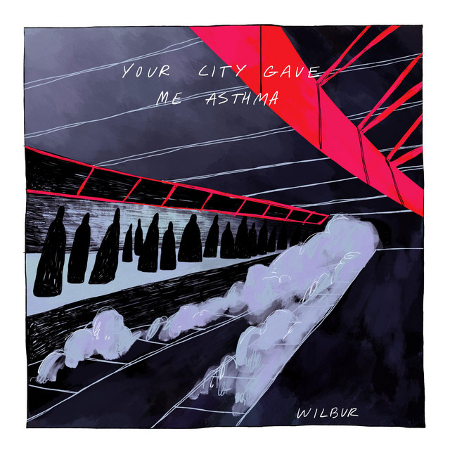

the video
north clyde line came about during the peak of my transport-mania, when i would spend hours on metrodreamin' and create full transit networks like any proud crayonista. it came from the novelty i got from the wilbur soot song, "jubilee line" which just scratched an itch for me, the noises of the railway are something really specific that really do mean a lot to me and can bring me back to certain times, but hearing london/southeast england noises wasn't right, like something slightly wrong that i had an urge to fix. so i (we) did, i wanted to make a parody version focusing on west lothian/scotrail, and that i did, i wrote the lyrics in a couple of sessions over a day, did my best to separate the audio tracks manually using repetition, the instrumental version, and some guesswork, i then got a friend to sing it for me, and then i spent far too long creating the album artwork, to go alongside it, as unfortunately i'm not a very talented artist, but it does what i wanted for the most part, and i know a class 334 scotrail train or an edinburgh tram or something would've made more sense, but the glasgow subway trains are just so iconic and fit the original title and song's subject more accurately. one thing that really does bug me going back at it, is that i made it so that the train is directly approaching some sort of pillar in the middle of the tracks, oops! either way it was a fun little thing to make and i do still occasionally come back to it for a listen every now and then. my favourite part was definitely messing around with the scotrail vox announcement system to create the iconic "this train is formed of x carriages", station announcements, and the "this train terminates here" bit, and adding in the class 334 electric motor noise to it all, it just felt perfect.
the song was never really made for anyone but myself, with a lot of the lyrics/sounds being hyperlocal-niche references, or things that no one else would really care about, but for specifically me, it is something i like, and even take a little pride in, with obviously a thanks to jess for actually singing the song. i think it's something that made me realise a lot of the things i do like this aren't for anyone but myself really, them being open isn't something i mind, and i like the possibility someone could read all these archives, but equally i like it being this relatively all-encompassing library of information, that no one really knows exists.
artwork comparison

original art

my art